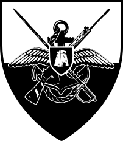

8th February 2025

Veterans Association Armed Forces of Malta
STATUTE
-
Name
The name of the Association shall be: Veterans Association Armed Forces of Malta.
-
Aims
The Veterans Association Armed Forces of Malta is an autonomous, secular, non-political, not-for-profit
voluntary organisation as defined in the Voluntary Organisations Act (Chapter 492 of the Laws of Malta),
formed:
- To commemorate the part played by those who served in the forces charged with the defence and
security of Malta.
- To create and cherish a bond of comradeship irrespective of rank between former members of the
Armed Forces of Malta.
- To provide assistance to members and, if possible, their families.
- To maintain contact with all entities concerned with the welfare of ex-servicemen and women.
- To produce and issue, gratuitously or by way of donations, newsletters and memorabilia.
-
Patron
The Patron of the Association shall be the Commander of the Armed Forces of Malta.
-
Membership
Membership is open to all who served in the Armed Forces of Malta, VRFs, EVRFs, Malta Land Force, Royal
Malta Artillery, Task Force, Territorials, Engineers, and surviving spouses of service personnel.
-
Administration and Management
-
Administration
-
The Association shall be administered by a Committee of Management elected bi-annually
at the Annual General Meeting. Secret ballot shall apply if nominations exceed available
positions. Politically exposed persons may not serve. Committee members must remain
politically impartial.
-
The Committee shall consist of a President, Vice President, Honorary Secretary, Honorary
Treasurer, PRO, and three other members.
-
The Committee may co-opt members to fill vacancies.
-
Absence from three consecutive meetings without good reason shall constitute
resignation. Deputies may be appointed with Committee approval.
-
Non-voting legal, medical, or ecclesiastical advisers may be appointed.
-
Management
- Normal Committee business shall be conducted by email.
- The Committee shall meet as required, but not fewer than six times annually.
-
Committee Responsibilities
- Day-to-day running of the Association.
- Maintaining membership lists and recruitment.
- Reporting deaths and resignations.
- Collecting subscriptions approved at the AGM by 31st December.
-
Financial Administration
- Financial year: 1st January to 31st December.
- All funds shall be used solely for Association purposes.
- The Honorary Treasurer manages all financial transactions.
- Accounts to be submitted by 31st December for authentication.
- Accounts circulated to members with AGM agenda if required.
-
Annual General Meeting
- Held between 15th February and 15th April.
- Minimum 15 days notice.
- Agenda:
- Minutes of previous meetings
- President’s report
- Honorary Secretary’s report
- Honorary Treasurer’s report
- Approval of accounts
- Resolutions
- Election of Committee members
- Any Other Business
- President’s closing address
-
Extraordinary General Meeting
EGMs may be convened by the Committee or upon written request by at least 20 members. Ten days written
notice shall be given.
-
Voting
One vote per member. The Chairman shall have a casting vote in the event of a tie.
-
Quorums
- Committee meetings: 50% plus one
- AGM: 20 members (or after 10 minutes)
- EGM: 20 members
-
Alterations to Statute / Rules
Amendments must be submitted in writing 15 days prior to an AGM and passed by a two-thirds majority.
-
Rescinding of Membership
- Membership may be rescinded for misconduct or disrepute.
- Requests must be submitted in writing.
- The Committee shall consider such requests.
- Re-application allowed after one year with a two-thirds Committee majority.
-
Dissolution of the Association
Dissolution requires a 75% majority at a General Meeting.
- Assets donated to similar non-profit organisations.
- Historical items donated to the AFM Museum.
- Association graves transferred with inscriptions preserved.
-
Force Majeure
In exceptional circumstances, the existing Committee shall continue operations until normal function can
resume. Remote or electronic meetings and voting may be used where practicable.